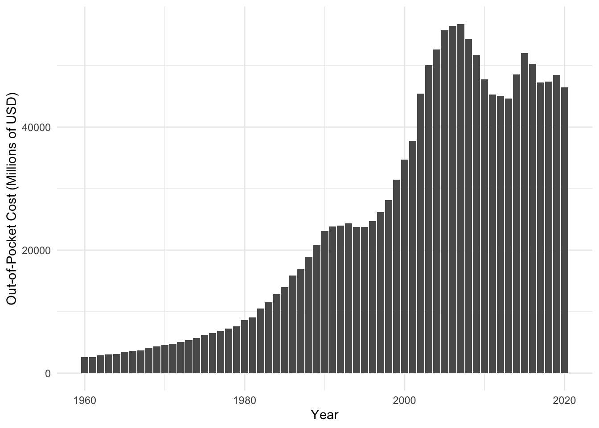
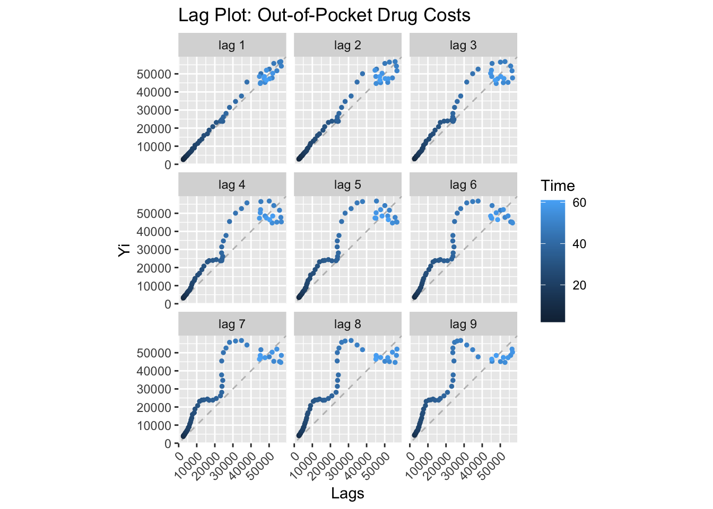

Code
library(tidyverse)
library(tidyquant)
library(ggplot2)
library(forecast)
library(astsa)
library(xts)
library(tseries)
library(lubridate)
library(plotly)
library(kableExtra)
library(dplyr)In this section, I want to perform exploratory data analysis on my precipitation dataset to answer the following questions listed out in the Guiding Questions for Analysis in my Introduction to this project:
Has precipitation in Florida changed over the last few decades? Is the state seeing increased, decreased, or relatively constant levels of rain year after year?
Is precipitation in Florida more common in some months than others?
To start, I will read in and clean the data before moving on to EDA.
library(tidyverse)
library(tidyquant)
library(ggplot2)
library(forecast)
library(astsa)
library(xts)
library(tseries)
library(lubridate)
library(plotly)
library(kableExtra)
library(dplyr)rainfall = read.csv("datasets/precipitation/rainfall_1895-2022.csv")
# rainfall$Date = as.Date(paste0(as.character(rainfall$Date), '01'), format = '%Y%m%d')
rainfall = rainfall$ValueNow, the rainfall data can be turned into a time series object for further analysis. The basic initial plot of the rainfall time series can be seen below.
# rainfall.ts = xts(rainfall, order.by = rainfall$Date)
# rainfall.ts
rainfall.ts = ts(rainfall, frequency = 12, start = c(1895,1))
autoplot(rainfall.ts, main = "Initial Rainfall Time Series (1895-2022)", xlab = "Year", ylab = "Rainfall (in)")
Because the initial time series plot above contains too many data points to legible, I am going to zoom in on the 1990 to 2022 time period to see if we can get a clearer visual to draw conclusions from.
When looking at the new time series plot below, it does not seem like there are any observable upward or downward trends to suggest that rainfall in Florida has increased or decreased over the years. However, there is an observable high variation in rainfall and what looks to be apparent seasonality. Based on the visual alone, I would conclude that the seasonality is neither additive nor multiplicative, because it
rainfall_2 = read.csv("datasets/precipitation/rainfall_1895-2022.csv")
rainfall_2 = rainfall_2[-(1:1140),]
rainfall_2 = rainfall_2$Value
rainfall2.ts = ts(rainfall_2, frequency = 12, start = c(1990,1))
autoplot(rainfall2.ts, main = "Monthly Average Florida Rainfall (1990-2022)", xlab = "Year", ylab = "Rainfall (in)")First, I will take an additive decomposition to separate the rainfall time series into its different components.
Below, we can see that there doesn’t seem to be much of trend, and that average rainfall in Florida since 1990 has remained relatively constant rather than increasing or decreasing. This can also be seen when extracting and plotting the trend component on its own.
ts_rainfall = ts(rainfall2.ts, frequency = 4)
decompose_rainfall = decompose(ts_rainfall, "additive")
autoplot(decompose_rainfall)
autoplot(as.ts(decompose_rainfall$trend), main = "Rainfall Decomposition: Trend Component")
However, clear seasonality seems to be present. To look at seasonality alone, I will extract the seasonality component form the decomposition.
As seen below, the dataset is clearly seasonal, suggesting that rainfall in Florida is seasonal, but not additive or multiplicative as it is not increasing or decreasing over time.
autoplot(as.ts(decompose_rainfall$seasonal[0:50]), main = "Rainfall Decomposition: Seasonal Component")
Next, I will be creating a lag plot of my Florida rainfall dataset. The purpose of this portion of exploratory data analysis is to check for randomness or non-random structures in the dataset, outliers, potential model suitability, correlation, and seasonality.
Below, we can clearly see that, for all lags 1 through 15, the dataset is exhibiting seasonal lag. We know this because months 1-3, months 4-6, months 7-9, and months 10-12 all exist in respective, separate clusters from each other.
gglagplot(rainfall2.ts, do.lines = FALSE) + xlab("Lags") + ylab("Yi") + ggtitle("Lag Plot: Rainfall") + theme(axis.text.x = element_text(angle=45, hjust = 1))The next important step of the EDA lag process is determining if the time series is stationary or non-stationary. In short, a stationary time series is one in which there is no trend, no seasonality, and constant variance over time. Seasonality is an important component of developing a predictive time series model, and non-stationary time series must be transformed to be stationary before proceeding to model development and fitting.
We can determine if the dataset is stationary or not by looking at the ACF and PACF plots below.
Below, we can see that there is clear seasonality in the ACF plot, with yearly lag peaks at 12, 24, 36, and 48. Visually, this means that the dataset is not stationary. To confirm the lack of stationarity, we will perform the Augmented Dickey-Fuller Test next.
ggAcf(rainfall.ts, 48, main = "ACF: Rainfall TS")ggPacf(rainfall.ts, 48, main = "PACF: Rainfall TS")
Below, we can see that the results of the ADF test seem to suggest stationarity with a small p-value. However, because of the results of the ACF plot, which is a more reliable measure of stationarity, we can conclude that the time series is not stationary.
tseries::adf.test(rainfall.ts)
Augmented Dickey-Fuller Test
data: rainfall.ts
Dickey-Fuller = -9.3746, Lag order = 11, p-value = 0.01
alternative hypothesis: stationaryHere, we can see that taking the first difference has improved the presence of seasonality, but it is still there, meaning that the data is not yet stationary.
require(gridExtra)
rainfall.diff = autoplot(diff(rainfall.ts), main = "First Difference")
diff.acf = ggAcf(diff(rainfall.ts), 48, main = "ACF: First Difference")
grid.arrange(rainfall.diff, diff.acf, nrow=2)
As seen below, taking the second difference seems to do the trick and make the data stationary.
require(gridExtra)
rainfall.diff2 = autoplot(diff(diff(rainfall.ts)), main = "Second Difference")
diff.acf2 = ggAcf(diff(diff(rainfall.ts)), 48, main = "ACF: Second Difference")
grid.arrange(rainfall.diff2, diff.acf2, nrow=2)